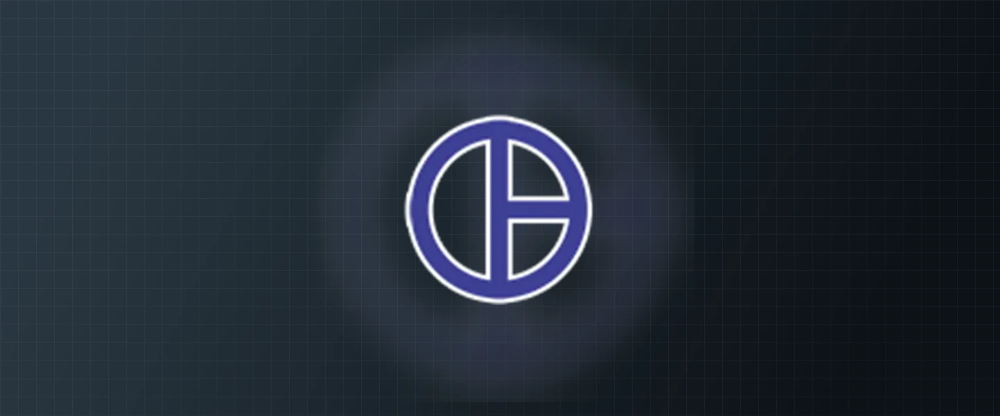

2026
Desktop · Chromium
GP Browser
A Chromium fork built for full Web Store support, with a disk-backed tab engine in progress. The design parks idle tabs as rows on disk instead of renderer processes, so very large sessions stay usable.
Private build · tab engine in progress